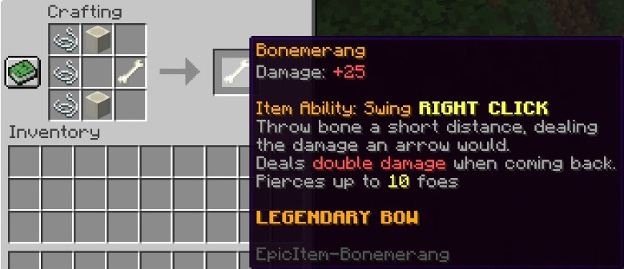
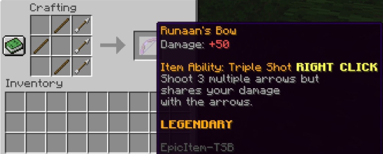
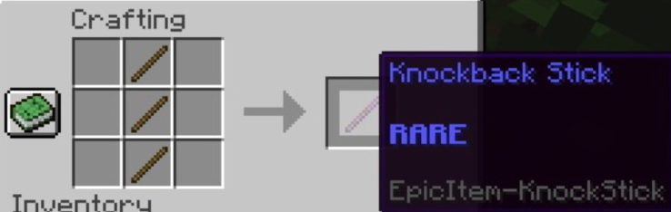
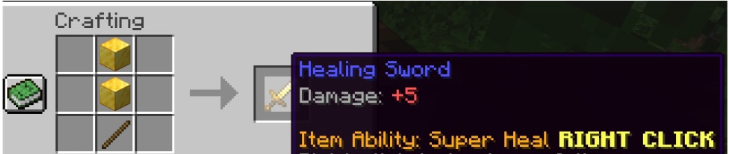
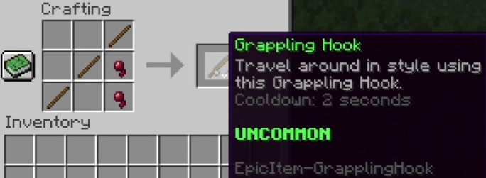
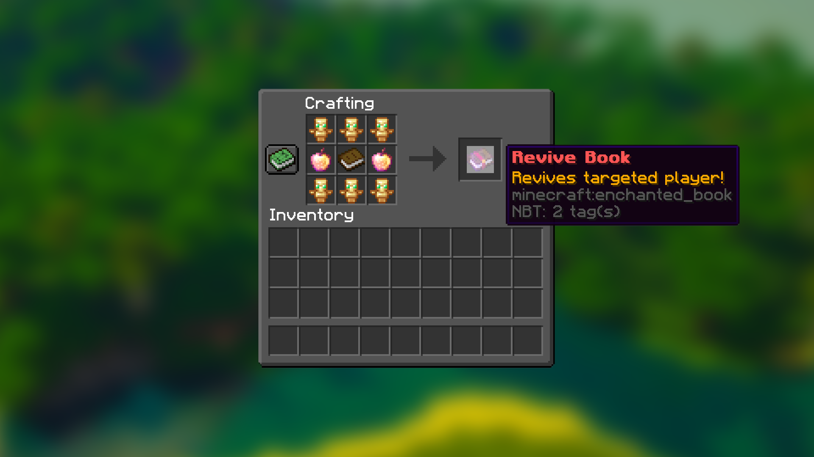
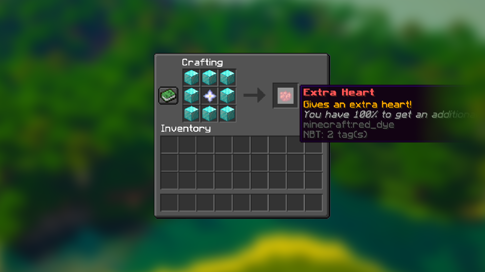

credits p-lifesteal and flareon45
made by flareon45
Crafting Recipies

2

3

4

5

6

7

Commands
1.How can I withdraw heart?
You can do this through the main command.
Use it as follows:
/lifesteal withdraw
2.How can I reload configuration when the server is running?
You can do this through the main command.
Use it as follows:
/lifesteal reload
3.How can I add an item of extra life to my inventory?
You can do this through the main command.
Use it as follows: (remember to adjust values to your needs)
/lifesteal give extra_heart
4.How can I add an revive book to my inventory?
You can do this through the main command.
Use it as follows: (remember to adjust values to your needs)
/lifesteal give revive_book
5.How can I add, remove or set hearts directly to my health bar?
You can do this through the main command.
Use it as follows: (remember to change values to your needs)
/lifesteal hearts
6.How can I check amount of hearts of other player?
You can do this through the main command.
Use it as follows:
/lifesteal hearts check
7.How can I see who has been banned for having no hearts?
You can do this through the main command.
Use it as follows:
/lifesteal bans
8.How can I unban someone who has been banned for no hearts left?
You can do this through the main command.
Use it as follows:
/lifesteal bans remove
9.How can I get server information for faster help on discord?
You can do this through the main command.
Use it as follows:
/lifesteal debug
Aliases
You don't have to use that long command! You can always use a shortened version of it. The alternatives for the /lifesteal command are /ls, /pls, /p-ls, /plifesteal or /p-lifesteal.
main command /shop
end